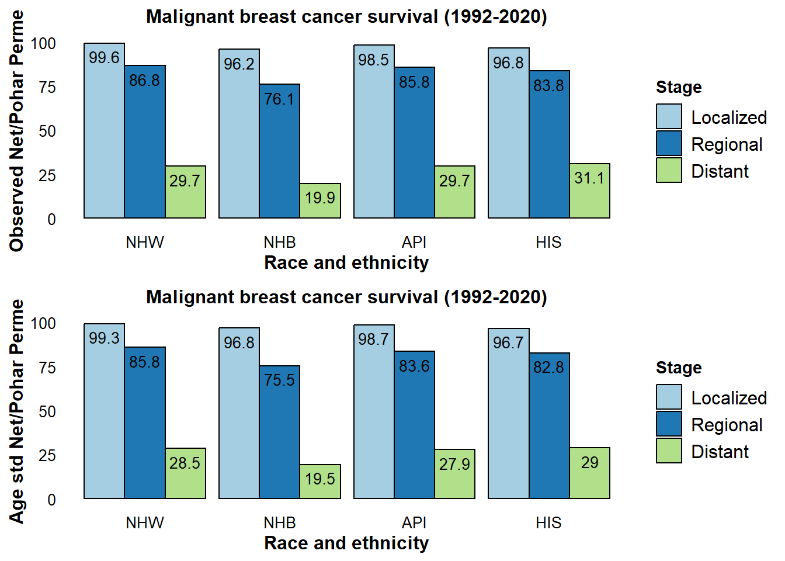

# Install and load necessary packages
if (!require("downloader")) {
install.packages("downloader")
}
library(downloader)
library(ggplot2)
library(gridExtra)
library(readr)Malignant Breast Cancer Net Survival by Race and Ethnicity, Stage, and ER Status (SEER12)
Overview
Survival analysis using the Surveillance, Epidemiology, and End Results (SEER) database often employs several estimators for relative survival. These include methods developed by Ederer I and II, Hakulinen (both Exact and Simplified), and the Net Pohar-Perme (PP) approaches.
Pohar Perme Method
The Pohar Perme method is utilized for computing cumulative expected survival, age-standardized according to the International Cancer Survival Standard 1 for individuals aged 15 and above. This method offers high accuracy for estimating 5-year survival and is widely accepted within the research community. For a detailed exposition of the method, see the journal article.
Advantages of Different Estimators
The choice of estimator can have various advantages depending on the survival duration under analysis. For instance, while the Pohar-Perme method excels for 5-year survival estimations, the Ederer methods may offer benefits when considering longer-term follow-up (such as 10-15 years).
A comparative analysis of different methodologies for calculating age-standardized net survival is available in this BMC Medical Research Methodology article. The comparison aids researchers in selecting the most appropriate estimator based on the specifics of their study and the survival timeframes of interest.
Observed vs Age-standardized relative survival
Not Actual Survival: Relative survival is an estimate of the probability of survival from the disease of interest in the absence of other causes of death. It does not reflect the actual survival experience of individual patients. For this purpose, we use Kaplan-Meier curves.
These two common metrics used are observed survival and age-standardized relative survival. These terms reflect different methodologies for estimating survival rates, and each serves a specific purpose in understanding the survival patterns of patient populations.
Observed Survival:
Observed survival refers to the calculation of survival probabilities from a group of patients over time, without adjusting for any other factors like age or stage of disease. It includes all causes of death. It can be influenced by the composition of the population, such as the age distribution. A population with older patients might naturally have lower observed survival rates simply because the mortality risks increase with age. It is often expressed as a ratio where the numerator is the observed survival of the cancer patients, and the denominator is the expected survival of a similar group from the general population.
Age-standardized Relative Survival:
Age-standardized relative survival takes observed survival by adjusting for the expected survival rate (LIFE TABLES) of a comparable group in the general population (matched by age, sex, and sometimes other variables). It allows to isolate the effect of the cancer from other causes of death that would affect anyone in the general population. By comparing the observed survival to the expected survival rates of a standard population, age-standardized relative survival removes the confounding impact of differing mortality risks that are unrelated to the condition being studied.
ICSS
SEER uses ICSS standard population. ICSS was created based on EUROCARE project. https://seer.cancer.gov/stdpopulations/survival.html
WHO world standard
This is my personal contribution to the topic. We developed the World Cancer Population based on a global cancer patient-based standard population that adjusts for the expected age structure of different cancers. This is an alternative to ICCS (which presents lots of limitations). WHO pop can be found here:Cancer Epidemiology
Results
Cancer Net Survival Rates by Stage
This section might detail the overarching results of the analyses performed in the document.
Loading Required R Libraries for Data Analysis
This part of the document would clearly list and load the necessary libraries that will be used throughout the analysis.
Importing Encrypted SEER12 Data Files from GitHub Repository
Discuss the process involved in accessing locked data files from SEER12 that have been stored on GitHub.
# Set the URL where the zip file is located
zip_url <- "https://github.com/filhoalm/Breast_cancer/raw/main/Survival.zip"
# Download the file to the local directory
zip_file <- "Survival.zip"
download(url = zip_url, destfile = zip_file, mode = "wb") # Ensure the mode is set to 'wb' for binary files
# Unzip the file to extract its contents
unzip(zip_file, exdir = ".") # Extract to the current working directory
# Now, specify the correct path to the file 'breast_net_5y_stage_age_std.csv' within the 'Survival' folder
# Check if the file exists in the unzipped directory
csv_file <- "Survival/breast_net_5y_stage_age_std.csv"
if(file.exists(csv_file)) {
# Read the CSV file
df <- read.csv(csv_file)
#print(head(df)) # Display the first few rows of the dataframe
} else {
stop("The file does not exist in the specified directory.")
}Data Transformation: Reshaping and Labeling SEER Variables
This section could describe the steps for restructuring the SEER12 dataset for analysis and the process of creating meaningful labels for each variable
# Rename variables
names(df)[1:4] <- c("type", "year", "race", "stage")
names(df)[13] <- c("Observed.Age.Std")
names(df)[19] <- c("Net.Relative.Age.Std")
names(df)[20] <- c("Net.Relative")
# Filter out rows with "Year of diagnosis" in the 'year' column and convert to numeric
df <- subset(df, df$year != "Year of diagnosis")
df$year <- as.numeric(df$year) + 1991
# Assuming that year == 1991 corresponds to "1992-2020" range in the dataset
df <- subset(df, df$year == 1991)
# Function to clean numeric columns with symbols
clean_column <- function(x) {
as.numeric(gsub("[#%]", "", trimws(as.character(x))))
}
# Apply the function to the relevant columns
# Apply the function to the relevant columns
df <- transform(df,
Observed.Age.Std = clean_column(Observed.Age.Std),
Net.Relative.Age.Std = clean_column(Net.Relative.Age.Std),
Net.Relative = clean_column(Net.Relative),
Observed = clean_column(Observed)
)
# Recode the race and stage values
df$race <- factor(df$race, levels = c(0, 1, 2, 3, 4, 5),
labels = c("NHW", "NHB", "AIAN", "API", "HIS", "Unknown"))
df$stage <- factor(df$stage, levels = c(0, 1, 2, 3, 4, 5, 6),
labels = c("In situ", "Localized", "Regional", "Distant", "Localized/regional (Prostate cases)", "Unstaged", "Blank(s)"))
# Filtering for specific races and stages
df4 <- subset(df, race %in% c("NHW", "NHB", "HIS", "API") & stage %in% c("Localized", "Regional", "Distant") & type == 1)Graphical Data Visualization of SEER12 Statistics
Present any figures or charts that have been generated to visually represent the findings from the SEER12 data.
# Define plot function to avoid repetition
plot_function <- function(data, y_var, y_label) {
ggplot(data, aes(x = race, y = get(y_var), fill = stage)) +
geom_bar(stat = "identity", position = position_dodge(), color = "black") +
geom_text(aes(label = get(y_var)), vjust = 1.6, color = "black",
position = position_dodge(0.9), size = 3.5) +
scale_fill_brewer(palette = "Paired") +
theme_minimal() +
theme(
panel.grid.major = element_blank(),
panel.grid.minor = element_blank(),
panel.background = element_rect(fill = "white", colour = "white"),
axis.text = element_text(size = 10, color = "black"),
axis.title = element_text(size = 12, face = "bold"),
plot.title = element_text(hjust = 0.5, size = 12, face = "bold"),
legend.background = element_blank(),
legend.key = element_blank(),
legend.title = element_text(face = "bold"),
legend.text = element_text(size = 12),
legend.position = "right"
) +
labs(x = "Race and ethnicity", y = y_label, fill = "Stage", title = "Malignant breast cancer net survival (1992-2020)")
}
# Create individual plots
a <- plot_function(df4, "Net.Relative", "Observed Net/Pohar Perme")
b <- plot_function(df4, "Net.Relative.Age.Std", "Age std Net/Pohar Perme")
c <- plot_function(df4, "Observed", "Observed survival")
d <- plot_function(df4, "Observed.Age.Std", "Age-adjusted Observed Survival")Assessing Observed Survival and Age-adjusted Survival Differences
Upon close examination, it is evident that Asian/Pacific Islander (API) populations exhibit the highest 5-year observed survival rates for both localized (93.6%) and regional (82.3%) stages. Conversely, Non-Hispanic Black (NHB) individuals have the lowest observed survival for the distant stage at 17.9%.
However, when we take into account age-adjusted survival, the disparities shrink, indicating potential influences from various risk factors such as age and other causes of mortality.
grid.arrange(c, d, ncol = 1, heights=c(10,10))Analysis of 5-Year Net Survival and Age-adjusted Net Survival
By accounting for competing causes of death, the observed differences in 5-year net survival rates for localized cancer are mitigated, resulting in more comparable outcomes across racial and ethnicity groups.
Adjustments for age in the age-standardized (age-std) net survival analysis further minimize disparities between these groups. Yet, it is noteworthy that Non-Hispanic Black women continue to exhibit less favorable 5-year survival rates—75.5% for regional and 19.5% for distant stages—suggesting inequities that warrant attention.
These insights underline the significance of considering various factors when estimating survival, as they can profoundly impact the perceived survival outcomes among different population groups.
grid.arrange(a, b, ncol = 1, heights=c(10,10))
Evaluating 5-Year Age-Adjusted Net Survival by Stage and ER Status in Breast Cancer
Estrogen receptor (ER) status is a critical marker in the prognosis of breast cancer, providing valuable predictive insights about the course of the disease. To delve deeper into survival disparities, we analyze 5-year age-adjusted net survival rates across different stages, with a focus on ER status in conjunction with race and ethnicity.
Our comparative analysis reveals that ER-negative cases are associated with lower survival rates. Notably, when examining survival outcomes among Non-Hispanic White (NHW), Hispanic (HIS), and Asian/Pacific Islander (API) populations, the differences in survival rates are not statistically significant.
In contrast, Non-Hispanic Black (NHB) patients consistently exhibit poor survival outcomes with age-adjusted net survival rates of 77.7% for localized, 53% for regional, and a grim 13.3% for distant stages.
Futher investigation
One could expeculate that the pronounced survival disadvantage in NHB patients is likely attributable to the prevalence of more aggressive forms of breast cancer, such as triple-negative breast cancer—a subtype found with higher frequency in this demographic. Now, let’s futher explore the survivalship by Breast cancer subtypes:
HR+/HER2- HR-/HER2- HR+/HER2+ HR-/HER2+